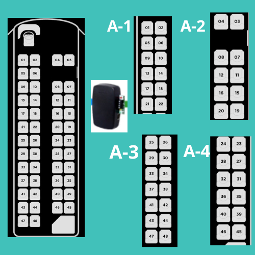
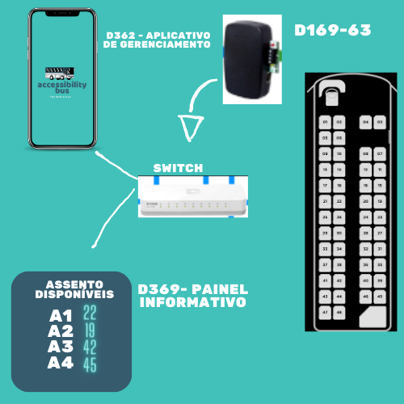

As vagas dos assentos são supervisionadas através de Sensores Sinalizadores que indicam a condição da vaga.
Os painéis informativos D363 apresentam as quantidades de vagas livres de cada assento.
Opcionalmente poderá haver painéis informativos com a planta baixa do acento contendo a indicação das vagas.
O Aplicativo de Gerenciamento D362 é uma ferramenta opcional instalada em um celular,pc..., que apresenta as informações dos assentos e também armazena e gera relatórios.
Cada assento é equipado com um Sensor Sinalizador Endereçável. Estas Unidades se comunicam por RS485 com a Interface D169, que informa aos Aplicativos o status das vagas dos assentos.
A comunicação entre as D169, o Painel Informativo D369 e o Aplicativo D362 é realizada via Ethernet, os componentes do Sistema são interligados através de cabos à um Switch.
 
Os assentos são monitoradas por Sinalizadores Detectores Endereçáveis, que ficam constantemente sinalizando os assentos livres através da cor verde e no momento que a pessoa se posiciona no assento detectam sua presença e mudam a sinalização para a cor vermelha.